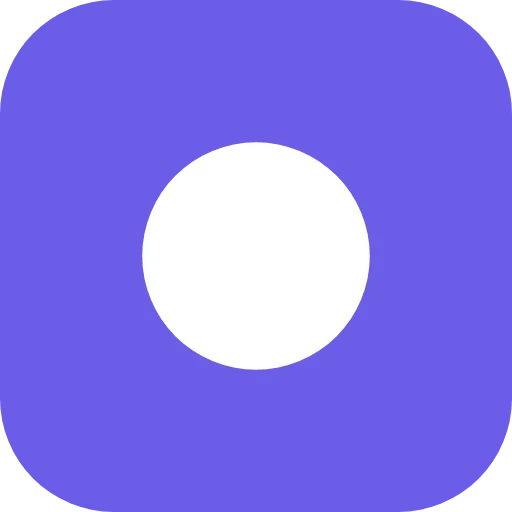
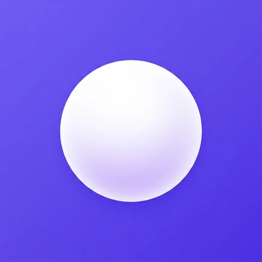
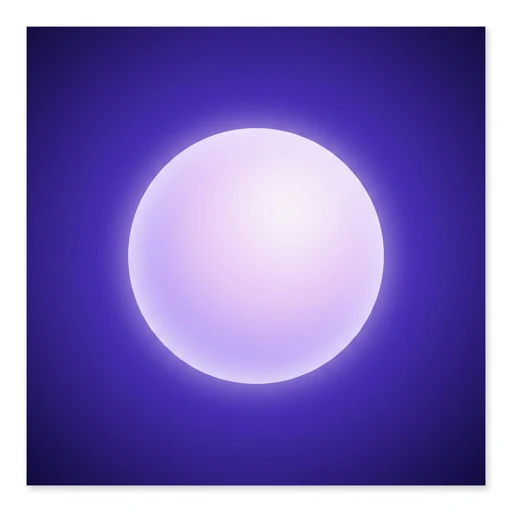
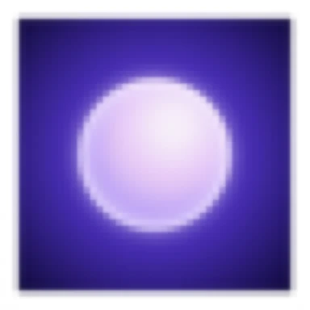

Решение принимается в 48 px и в выдаче магазина, а не в крупном размере: именно там иконка либо читается, либо превращается в пятно.



Каждая иконка уменьшена до 48 px и увеличена обратно. Видно ровно то, что останется от неё в списке приложений и в выдаче.

Край исчезает, остаётся размытое пятно света.C отпадает по двум причинам сразу. Он размывается в 48 px — это видно на тесте выше. И тёмный фиолетовый фон со светящимся шаром уже занят Mind Tracker, популярным в России приложением с сотней тысяч установок: мы отличались бы от собственной текущей иконки, но сливались бы с конкурентом. Это худший вид непохожести.
B против A — выбор между узнаваемостью и заметностью. B читается так же хорошо и выглядит сделанным, а не дефолтным, но силуэт тот же, поэтому людей, уже видевших рекламу, он не собьёт. A честно работает, но это иконка по умолчанию для категории.
Проверять стоит на людях: показать все три в 48 px и спросить «что делает это приложение» и «на какую нажмёшь». Оценки моделей — не замер кликабельности.